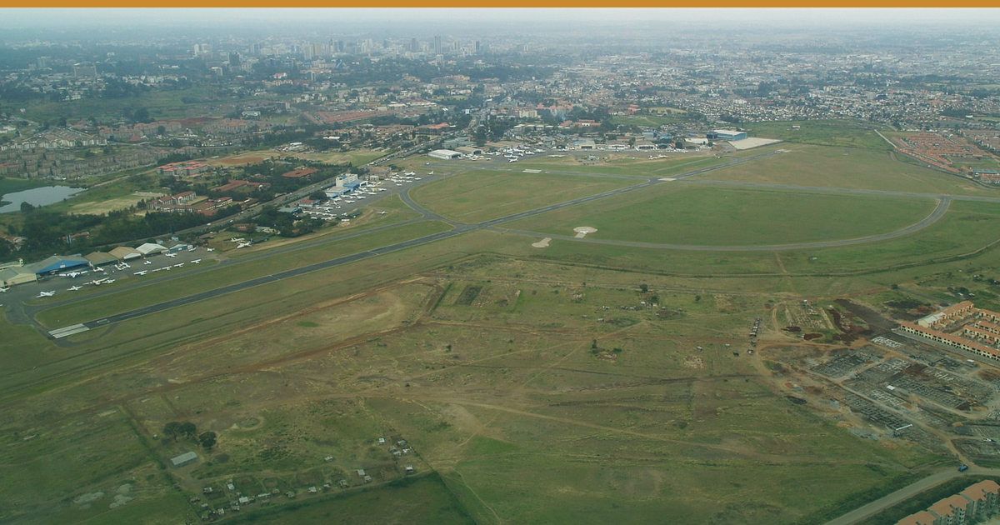

Photo: Kreuzschnabel · Wikimedia Commons · Editorial use — sourced via web/Google Images search; no reuse licence granted, credited to original publisher
A Court Suspended Kenya's US$50,000 Tourist Insurance Rule on 21 August — the Trade Only Noticed Yesterday.
1️⃣ 🇰🇪 ⚖️ A COURT SUSPENDED KENYA'S US$50,000 TOURIST INSURANCE RULE ON 21 AUGUST — THE TRADE ONLY NOTICED YESTERDAY
The High Court at Marsabit issued conservatory orders on 21 August 2026 halting Gazette Notice No. 11492, the travel-health insurance rule gazetted by Health CS Aden Duale on 30 July. Justice Francis Rayola Olel certified it urgent; heard inter partes 16 September 2026 (Kahawatungu / The Standard, 24–25 Aug 2026).
Petitioners argue entry conditions belong to Interior and Immigration, not Health; that it encroaches on the IRA; and that uploading health data via the eTA breaches Article 31 privacy. It is the second case filed — a COFEK challenge runs alongside.
Correction, ours: on 24 Aug we called this "under challenge, mention 29 Sep". It had been suspended three days earlier; 29 Sep belongs to the other case. Tracker fixed.
🎯 So what: that cost line is judicially frozen, not dormant. Quote high-season packages without it, but do not delete the clause from 2027 contracts — 16 Sep can restore it. 🏷 All · KE · Confirmed
2️⃣ 🇰🇪 ✈️ NINETY DEAD AIRCRAFT ARE DIVERTING FLIGHTS AT WILSON — YOUR SAFARI FEEDER HUB
An Auditor-General audit finds 90 grounded aircraft occupying apron space at Wilson, "forcing flight diversions" and costing KAA revenue (Nancy Gathungu, via Business Daily, 23 Aug 2026). Wilson handled 83,855 movements in the year to June 2025 vs 65,512 in 2021 — up 28%. About five aircraft have been auctioned since 2024, when the count was 70; it is now 90. Some traffic is pushed to Orly Airpark near Kiserian. The audit also flags no proper terminal — a corridor holding 50 passengers — and incomplete screening.
On 24 Aug KCAA acting DG Nicholas Bondo said training schools should move off Wilson, with landing and parking charges under discussion (People Daily, 24 Aug 2026).
Read the mechanism correctly: the constraint is apron parking, not runway slots — and flight schools are not the dead metal. Relocation is a proposal with no date.
🎯 So what: bush properties — treat Wilson diversion risk as live for peak season. Pad transfer windows, confirm your charter's parking arrangement, and brief guests on the terminal reality before arrival. 🏷 Bush/City · KE · Confirmed
3️⃣ 🇰🇪 📊 THAT KSh 564 BILLION FIGURE — READ IT PROPERLY
CS Rebecca Miano's ministry reports KSh 564bn in FY2025/26, up from KSh 224bn in FY2021/22 (The Standard, 21–22 Aug 2026) — a four-year rise, not a recent doubling.
And the visitor number is misquoted. The 7.91m headline is total tourism activity: 2.76m international arrivals plus 5.15m domestic bed-nights. A bed-night is not a visitor. "7.9 million visitors" inflates the addressable market roughly threefold.
🎯 So what: if a lender or JV partner quotes 7.9m visitors at you this week, correct it. Your international denominator is 2.76m. 🏷 All · KE · Confirmed
🟢 STILL TRUE — no EA advisory level moved. Kenya US Level 2, Uganda 4, Tanzania & Zanzibar 3, Rwanda 3.
💲 COST PULSE — Nairobi diesel KSh 217.86/L, super KSh 214.03/L (EPRA, 14 Aug). Inflation: KE 6.4% · TZ 4.0% · UG 3.7% · RW 13.6%.
🔗 This edition on the web: eahospitalitypulse.com/editions/pulse-2026-08-25-midday…
— EA Hospitality Pulse | Daily intelligence for city, bush & beach properties
📣 Telegram (full editions) 💬 WhatsApp (daily skim) 💼 LinkedIn (the Big Read) 🗂 Every edition